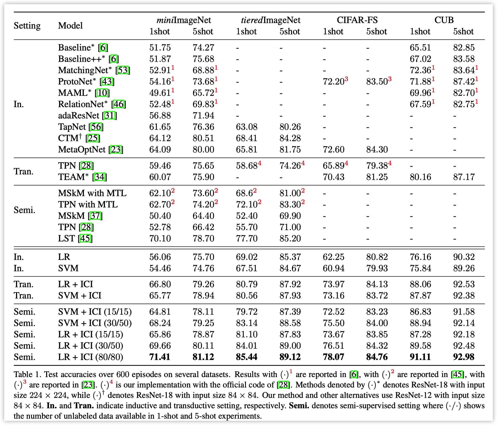

Instance Credibility Inference for Few-Shot Learning
Yikai Wang, Chengming Xu, Chen Liu, Li Zhang, Yanwei Fu.[paper] [code] [bib]
@inproceedings{wang2020instance,
title={Instance Credibility Inference for Few-Shot Learning},
author={Wang, Yikai and Xu, Chengming and Liu, Chen and Zhang, Li and Fu, Yanwei},
booktitle={Proceedings of the IEEE Conference on Computer Vision and Pattern Recognition},
year={2020}
}Abstract
Few-shot learning (FSL) aims to recognize new objects with extremely limited training data for each category. Previous efforts are made by either leveraging meta-learning paradigm or novel principles in data augmentation to alleviate this extremely data-scarce problem. In contrast, this paper presents a simple statistical approach, dubbed Instance Credibility Inference (ICI) to exploit the distribution support of unlabeled instances for few-shot learning. Specifically, we first train a linear classifier with the labeled few-shot examples and use it to infer the pseudo-labels for the unlabeled data. To measure the credibility of each pseudo-labeled instance, we then propose to solve another linear regression hypothesis by increasing the sparsity of the incidental parameters and rank the pseudo-labeled instances with their sparsity degree. We select the most trustworthy pseudo-labeled instances alongside the labeled examples to re-train the linear classifier. This process is iterated until all the unlabeled samples are included in the expanded training set, i.e. the pseudo-label is converged for unlabeled data pool. Extensive experiments under two few-shot settings show that our simple approach can establish new state-of-the-arts on four widely used few-shot learning benchmark datasets including miniImageNet, tieredImageNet, CIFAR-FS, and CUB.
Experiments
We conducted experiments on four few-shot learning datasets, and the results are as follows:
